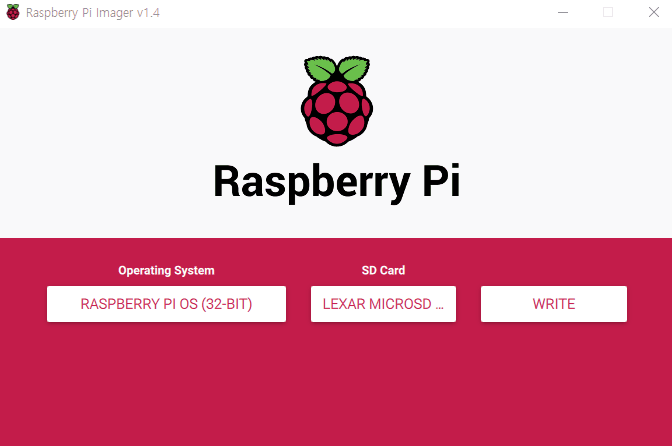
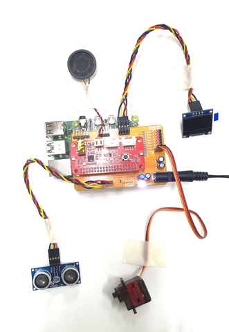
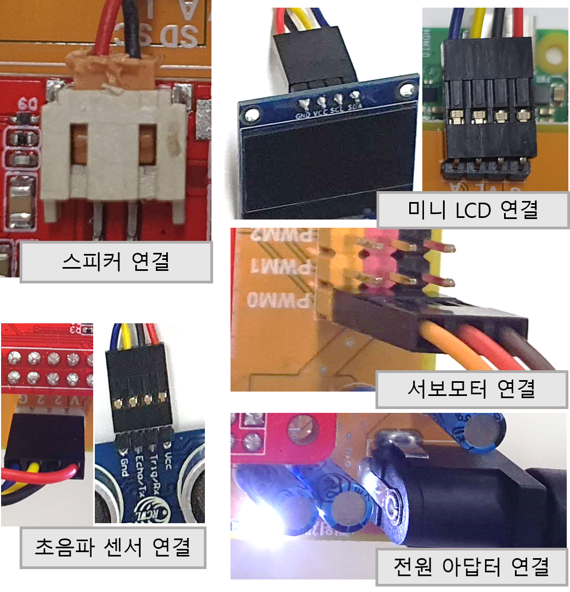
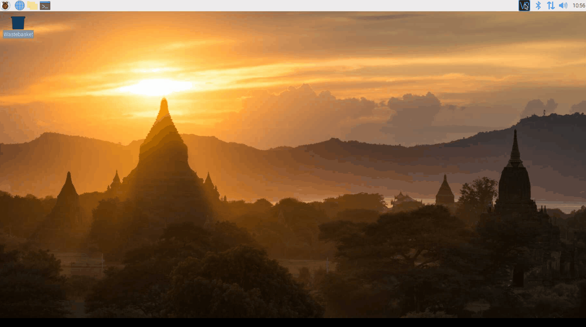
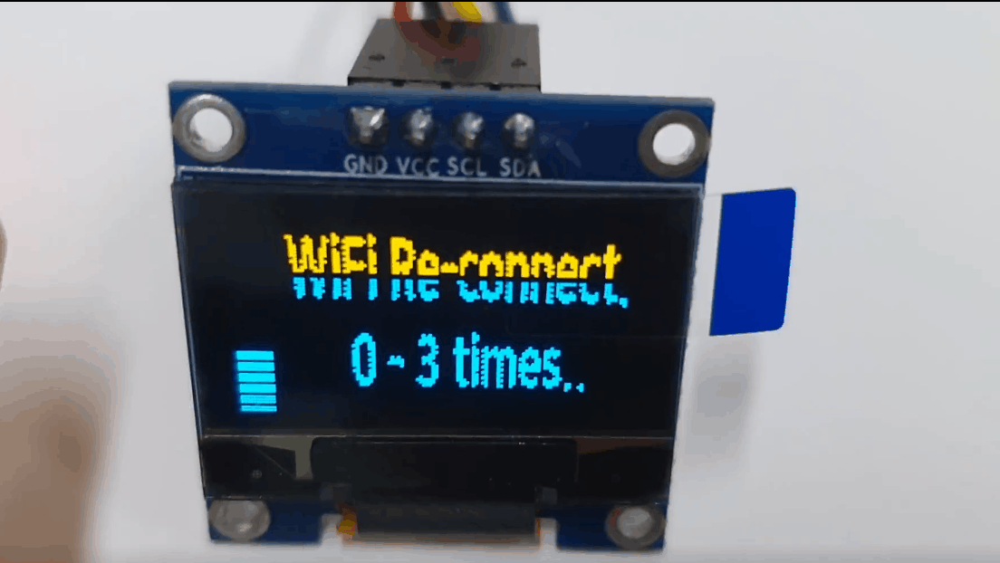

피노봇 클린설치¶
이 문서는 라즈베리파이OS 공식롬에 처음부터 피노봇 프로젝트를 설치할때 설치할 방법을 정리한 문서입니다.
라즈베리파이 OS를 기준으로 작성이 되었으며,
라즈베리파이 OS 버전 및 Respeaker사의 seeed-voicecard 드라이버 버전에 따라 설치에 오류가 발생 할 수 있습니다.
1. 준비물¶
- 라즈베리파이 및 sd카드
- SD카드 리더기
- 키보드 마우스
- 모니터
- 모니터 연결 케이블 및 젠더
- Raspberry Pi 3B+ : 일반 HDMI 케이블 사용가능
- Raspberry Pi ZeroW : 미니 HDMI 젠더 혹은 케이블 필요
- Raspberry Pi 4B : 마이크로 HDMI 젠더 혹은 케이블 필요
- 무선, 유선 네트워크
2. 라즈베리파이 공식 OS 설치,¶
win32diskmanager , Raspberry Pi imager , BalenaEtcher
등의 프로그램으로 sd카드에 OS를 설치합니다.
3. 피노봇 하드웨어 가조립.¶
소프트 웨어 작동확인 및 부품 작동 확인을 위해 회로를 가조립합니다. 연결 방법은 다음과 같습니다.
가조립은 다음과 같이 진행하며
회로 연결은 다음과 같습니다.
인터페이스 보드 및 마이크-스피커 보드 연결
초음파 센서 연결
스피커 연결
미니 LCD 연결
서보모터 연결 (테스트를 위해서는 그림과 같이 1개만 연결해도 가능합니다.)
전원 연결
4. 부팅¶
키보드 및 마우스, HDMI 케이블을 연결하고 라즈베리파이를 부팅합니다.
5. 라즈베리파이 초기설정¶
이제 피노봇 SW를 설치하기위해 라즈베리파이를 설정해주는 단계입니다.
5.1 라즈베리파이 와이파이 설정¶
라즈베리파이에서 다음과 같이 무선랜(와이파이)를 연결해주거나 혹은 유선 네트워크를 라즈베리파이에 연결합니다.
와이파이 연결이 잘 안될경우 Preference -> Raspberry Pi Configuration -> Localization -> WiFi Country 메뉴에서
국가를 미국(US), 영국(UK)등으로 변경해 줍니다, 라즈베리파이 자체의 버그로 한국은 네트워크 설정관련 문제가 존재합니다.
6. 피노봇 설치¶
이제 피노봇 소스코드 설치를 진행합니다.
7. 피노봇 설정파일 및 키 설정¶
먼저 피노봇과 다이얼로그플로우의 연결을 위해서
피노봇_다이얼로그_플로우_설정 을 진행해서 json 포멧의 키 파일을 받은후에 진행해야합니다.
8. 피노봇 프로그램 실행¶

{kind=link}
{kind=link}
{kind=link}
{kind=link}
{kind=link}
{kind=link}
{kind=link}
{kind=link}
{kind=link}
{kind=link}
{kind=link}
8.2 네트워크 재 연결¶
{kind=link}
다음과 같은 화면은 네트워크 재 연결을 시도하는 동작입니다.
위 화면이 반복될경우 모니터를 연결해서 네트워크 상태를 확인해주시기를 바랍니다.
네트워크가 연결되어있어도 같은 상황이라면, 프로그램 재설치를 권장합니다.
8.3 피노봇 수동실행¶
피노봇 서비스를 중단하기위해서는 라즈베리파이의 터미널을 접속한다음. 실행중인 프로그램 중단을 위해서는 다음 명령어를 입력합니다.
sudo systemctl stop PinoBot.service # 피노봇 중단코드
서비스 실행을 위해서는 다음 명령어를 입력합니다.
sudo systemctl start PinoBot.service # 피노봇 서비스 실행코드
서비스 중단이후 수동 코드 작동을 위해서는 다음 명령어를 입력합니다.
cd /home/pi/Desktop/PinoBot # 피노봇 설치폴더 이동
# 두 명령어중 한가지 선택해서 피노봇 실행가능.
sudo PinoRun.sh # 피노봇 수동실행방법 (1)
sudo python3 pino_main.py # 피노봇 수동실행방법 (2)
피노봇 자동실행을 중단하려면 다음 명령어를 입력하면 됩니다.
sudo systemctl stop PinoBot.service # 피노봇 중단코드
sudo systemctl disable PinoBot.service # 피노봇 서비스 자동실행 비활성화